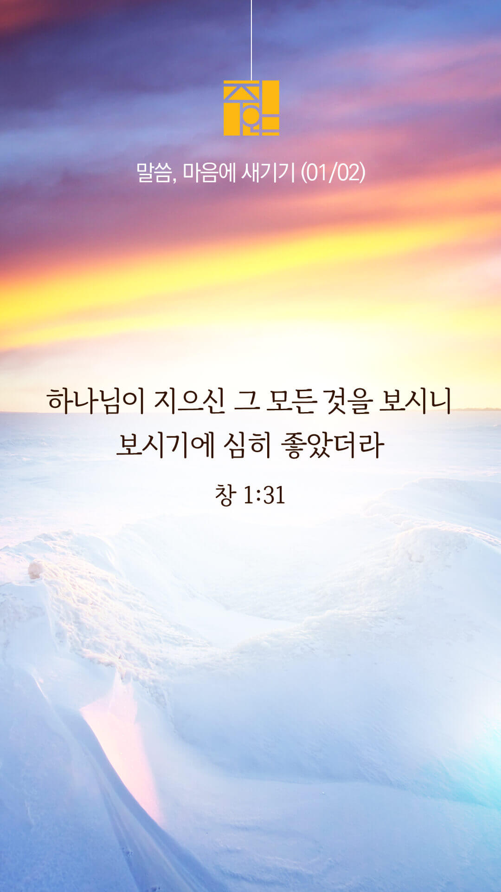

기도실 안내
2022년 01월 02일 (주일)
- 온라인 기도실은 온 회중이 함께 주님 앞으로 나아가는 자리입니다
- 30분 정도 여유를 가지고 하시기 바랍니다
- 말씀과 묵상, 찬양과 기도로 나아갑니다
- 배경 음악이 나올 수 있습니다 볼륨을 조절해주세요
준비가 되셨으면 아래의 버튼을 눌러주세요
할렐루야
내 영혼아 여호와를 찬양하라
시 146:1
- 가사를 묵상하며 읽습니다
나의 소망
구세주 예수의 사랑을
나 이제야 깨달았으니
세상의 헛된 것 구하지 않고
오직 주의 뜻을 따라 사네
변함없는 주님의 크신 사랑 속에
살아 숨 쉼을 감사하고
내게 주신 구원의 은혜
기쁘게 찬양하네
할렐루야
내 영혼아 여호와를 찬양하라
시 146:1
- 가사를 묵상하며 읽습니다
내가 살아가는 동안에
무엇을 바라며 살까
나의 소망은 주께 있으니
모두 내어 맡기리
여호와여 나의 기도 들어주소서
뜻하신 곳 내가 서게 하시고
나의 모든 정성 사랑의 주 위하여
사용하게 하소서
여호와여 나의 기도 들어주소서
뜻하신 곳 내가 서게 하시고
나의 모든 정성 사랑의 주 위하여
사용하게 하소서
할렐루야
내 영혼아 여호와를 찬양하라
시 146:1
나의 소망 by 김주혜
위의 찬양이 끝나면 말씀읽기를 눌러주시면 됩니다
주의 말씀은 내 발에 등이요
내 길에 빛이니이다 (시119:105)
오늘의 말씀입니다
음악 소리가 크면 조절하시기 바랍니다

마음의 묵상
창 1:31
“하나님이 지으신 그 모든 것을 보시니 보시기에 심히 좋았더라 저녁이 되고 아침이 되니 이는 여섯째 날이니라”
1. 하나님께서는 여섯째 날에 무엇을 창조하셨기에 “심히 좋았더라”고 말씀하나요?
2. 당신은 하나님이 지으신 존재임을 진실로 믿으시나요?
3. 지으신 분의 뜻에 따라 살게 해달라고 잠시 기도합시다
주님의 마음을 아프게 하지 않는 한해가 되게 하소서
회개, 삶의 방향을 바꾸는 결정
저의 허물을 용서하시고 새롭게 하여 주소서
“내가 너희에게 이르노니
이와 같이 죄인 한 사람이 회개하면
하늘에서는 회개할 것 없는 의인 아흔아홉으로 말미암아 기뻐하는 것보다 더하리라”
- 누가복음 15:7장 -
3분 정도 회개하며 주님 앞에 나아갑니다
사슴이 시냇물을 찾기에 갈급함 같이
시 42:1
- 다음의 말씀을 소리 내어 읽습니다
[시편 23편 1-6절]
1 여호와는 나의 목자시니 내게 부족함이 없으리로다
2 그가 나를 푸른 풀밭에 누이시며 쉴 만한 물 가로 인도하시는도다
3 내 영혼을 소생시키시고 자기 이름을 위하여 의의 길로 인도하시는도다
사슴이 시냇물을 찾기에 갈급함 같이
시 42:1
- 다음의 말씀을 소리 내어 읽습니다
[시편 23편 1-6절]
4 내가 사망의 음침한 골짜기로 다닐지라도 해를 두려워하지 않을 것은 주께서 나와 함께 하심이라 주의 지팡이와 막대기가 나를 안위하시나이다
5 주께서 내 원수의 목전에서 내게 상을 차려 주시고 기름을 내 머리에 부으셨으니 내 잔이 넘치나이다
6 내 평생에 선하심과 인자하심이 반드시 나를 따르리니 내가 여호와의 집에 영원히 살리로다
하나님 나라
1. 한국교회와 선교를 위한 기도
하나님 아버지,
한국교회를 말씀과 기도로 거룩하게 하사 세상 속에서 빛과 소금의 역할을 감당하게 하소서.
간절한 마음으로 3분 정도 기도합시다
남과 북
2. 대선을 위한 기도
하나님 아버지,
이 나라의 상처와 아픔을 치유하고 회복으로 이끄는 가슴 따뜻한 지도자가 세워지게 하옵소서.
간절한 마음으로 3분 정도 기도합시다
대한민국
3.가정을 위한 기도
하나님 아버지,
가정의 주인이 하나님이심을 인정하며 예배로 가정을 세우게 하옵소서.
간절한 마음으로 3분 정도 기도합시다
한국교회
4. 다음 세대를 위한 기도
하나님 아버지,
다음 세대가 예수 그리스도 안에서 참 소망을 발견하고 인생의 분명한 목적과 이유를 발견하게 하옵소서.
간절한 마음으로 3분 정도 기도합시다
주안교회
5. 주안 교회를 위한 기도
하나님 아버지,
주안의 모든 성도들이 각자의 삶의 현장으로 부르심을 받은 일상의 선교사임을 잊지 않게 하시고, 부르심을 받은 그곳에서 선교적 삶으로 복음의 빛을 비추는 성도들이 되게 하소서.
간절한 마음으로 3분 정도 기도합시다
감사의 기도
- 오늘 기도를 인도하신 주님께 감사를 올려드립니다
- 아래의 구절을 읽고 주님께 감사의 마음을 올려드립시다
“너희는 이 세대를 본받지 말고 오직 마음을 새롭게 함으로 변화를 받아 하나님의 선하시고 기뻐하시고 온전하신 뜻이 무엇인지 분별하도록 하라”
- 로마서 12장 2절 -
고요한 가운데 잠시 침묵하시기 바랍니다
파송, 세상을 향하여
- 오늘의 온라인 기도를 마쳤습니다
기도를 들으신 주님께서 평안히 가라 하십니다
주님께서 우리와 함께 하시니 두려울 것이 없습니다
새벽을 깨우며
- 새벽기도회 안내입니다